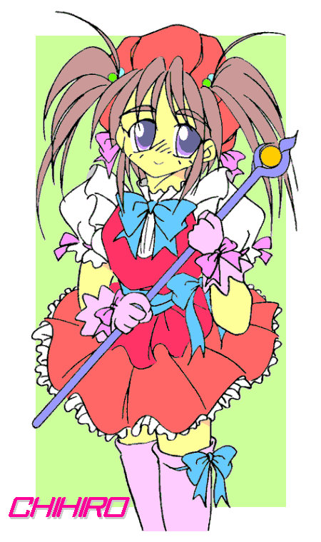

「「かんぱーい！」」
エーテルワークス社のオフィスに、五つの歓声が上がる。
「――っ、ぷはぁ！ やっぱ労働後の酒はうめえなあ！」
「いい飲みっぷりだなぁ、フルミ。もう一杯いくか？」
「お、悪いねえ。つーか今日はやけに振る舞いよくないか？」
「そりゃ、祝い事なら楽しく行かにゃあな」
「ちょ、ちょっと飛鳥さん、なに未成年に酒なんて薦めてるんですか！？」
「いいじゃないですか、こういう日に少しくらいは。まあ実はノンアルコールビールなんですけどね、あれ」
「そうなの？ なるみちゃん」
「ええ、だから安心してください。ビールがダメなら、これなんてどうです？」
「――あ、おいしい」
……いつものメンツ、と言っていいのかどうか知らないが、時雨フルミ、各務ちひろ、紫神飛鳥・なるみ兄妹、そして華村天稀の五名。これが社ビル六階、役員用オフィスの一角で、机や椅子を片付けてプチ宴会状態なのである。
天稀の手にはカシスウーロン。フルミはビール、ちひろはカルーアミルク、なるみはソルティードッグ――って全部酒じゃん。未成年に酒飲ませていいのか？
「んでもフルミのはノンアルコールビールだぞ。最初の一杯以外は」
ってことは最初は飲ませたんじゃねーか。
「少しくらいなら問題ねーって」
えっと、よい子は真似しちゃダメなんだからねっ。
「ちひろについては、肉体的には魔法使い種族――微妙に人間じゃなくなってるから、人間向きの慣例を厳密に適用しなくても、まあいいだろ」
いいのか本当に？ 既にして酔いはじめてるように見えるが。
「さあ、知らん」
オイコラ。
「んで、なるみはああ見えて実年齢は二十歳越えてる。問題なし」
確かに、この三人の中では一番しっかりしたように見えるけど。
「おまえも含めて四人でも、そう見えるな」
うっせ。
おもしろいもので、呑み初めは『未成年が呑んじゃダメ』とか言ってたやつが、真っ先に酔う。
「れんきは〜ん、ろんれまふかー？」
ちひろ、おまえ全っ然ロレツが回ってねーじゃねーか。どんだけ酔ってとんねん。ちょっとトイレ行って出して来い。
「ふぇ〜い」
どうやら『魔法使い種族は人間よりも酒に強い』などということは全然なかったらしい。やれやれ。
なるみちゃん、彼女に一体なにを何杯呑ませたの？
「なんかカルーアミルクが気に入ったみたいで、十杯くらい呑んでましたよ」
あれ、八パーセントくらいはアルコールなかったっけ。ジュースみたいに甘いからって、そんなに呑んだらかなりくるぞ？
「へぇ、あんなジュースみたいなのでも、意外に入ってるんですねぇ」
「ところでよ、今日は何で酒盛なんてしてるんだっけ？」
あれ、フルミちゃん聞いてないの？
「『ちゃん』づけで呼ぶな」
ぇー、かわいいのに。
「――何か言ったか？」
いだ、いだだ、お願いだからアイアンクローはヤメテ痛い。
「んで、何でなんだ？」
「さあ。ボクは『おっきなプロジェクトが終わったんで慰労会する』としか聞いてませんけど」
「プロジェクト？」
はいはーい、知ってまーす。教えて欲しけりゃさっさとこのアイアンクローを解きやがれ――ごめんなさい解いてくださいお願いします、そろそろ限界ですへるぷみー。
「……ほらよ」
いでっ！ ったー、突き飛ばすなよ、コブできるだろ。
「で、この面子でプロジェクトって、ひょっとしてアレか？」
無視かよ！
「多分それで正解」
おや、おかえり飛鳥。てか今までどこに？
「ちょっと電話ついでにトイレにな。そしたらこれが倒れてた」
……おーい、ちひろちゃん。トイレで寝てたんか、アンタは。
「りひろひゃんってよんりゃいやぁ」
「なんか寝ぼけてますね」
「しかもロレツ回ってねえし。酔ってんだなコイツ。眠り上戸か？」
そうみたいだねぇ。まるで（ピー）さんみたい、って何だこの自主規制わ。
「勝手に人の名前出すのはよくないですよ」
あんたか、なるみちゃん。いや意見は正論だと思うんだが……まあいいか。
で、プロジェクトって、やっぱあれなん？ コンチワッスの？
「おう、それだ。オープンベータの開始を祝って、関係者で軽く一杯ってところだな」
「おーぷんべーたって何？」
「ん、知らんのかフルミ。説明してやれ、馬鹿監査」
馬鹿ゆーな！
えとな、オープンベータってのはオンラインゲームの用語で、サービス開始の前の、登録さえすれば誰でも遊べる状態のこと。一応名目上は動作テスト期間なんだけど、客寄せイベントみたいなもんだね。
「へぇ。でも以前オレたち、それで遊ばなかったか？」
あれはだね、一応正真正銘のテストだったんよ。要員を関係者の知り合いから募ったり、応募で集めた上で抽選で人数絞ったりして、限定して試験するの。
「俺達でやったのはアルファテストだな。サイバーシステムの動作確認。ちょっと懐かしいだろ」
「いや、あんまり」
「なんて言うか、正直あれはちょっと、呆れましたけどね……」
ほらほら、特製の記録映像もあるでよ。
「いつの間に作ったんだ、そんなもん」
そんなんいいから、ほら流すぞ〜
|
さいばぁぷろじぇくと？ |
| 当文書は華村天稀の聞き語りでお送りいたします。 |
「空断閃っ！」
「ふらくたるビーム！」
「紫電よ！」
きらめく剣閃が、迸る閃光が、轟く雷鳴が、群れ居る敵を軽々と打ち倒す。
数十日の激闘の末にステータスとスキルを極めた上級プレイヤーを相手にするための、強敵なはずの怪物たちを……である。
「よくできたゲームだけど、でも敵が弱いね」
「敵が弱いんじゃなくて、ゲームで想定するよりもボクたちが強すぎるんですよ」
「なにせ『経験者二人』だもんな」
ていうか、火力のハンパじゃない異能を一般人向けのゲームに持ち込めば、そりゃラスダンも楽勝になるわ。
というわけで、この日はこの新作らしいMMORPGの中核システムをテストしている。完成すると、サイバー技術とバーチャルリアリティを用いて、本当の冒険を五感で味わえる、というのが売りになる予定だ。もっとも、痛覚とか性感とか、リアルに再現し過ぎてしまうとやばいものもあるので、そのあたりは調整に調整を重ねる必要があるだろう。
この電脳空間、詳細な理屈は省くが、特にフィルタ設定をしない限り個々人の能力がそのまま再現される。それが魔法や異能の能力であっても、だ。今回は異能の制限を全くかけていないため、現実で魔法が使えるヒトは、ここでも同様に魔法が使える。
ホンモノの冒険者を経験したことのあるフルミとなるみ、そしてゲームに関しては見識の広いちひろを、テストプレイヤーとして投入したのだが……こいつら揃いも揃ってけっこうなパワーキャラなもんだから、舞台は早くも魔王の城、もうすぐラスボスだってのに、苦戦の苦の字も見当たらない。
言ってみれば、生身の戦いに戦車を投入するようなもんだわな。塹壕で銃を構え果敢に戦う敵兵を、鉄壁の強度と勢いで踏み潰しながら突き進む一行。はっきり言って手に負えない。
「パワーキャラって、ボクもですか？」
なるみちゃん、あんた自分で思ってるより優秀なんだよ。ボケキャラだけど。
「馬鹿監査に『ボケ』だなんて言われたくないです。」
誰が馬鹿か！
「ボケは別にいいのか？」
いいような悪いような……ビミョ。
まあそれはさておき、幽霊のような状態になれるというストーキングに好都合な能力のある天稀が、この異常なテストプレイヤーたちをモニタリングしているわけで。他にも何人かがゲームのどこかに配備され（テストプレイヤーではない）、それらから来る情報を弊社髄一の電算機技術者である玲司が取りまとめ、ゲームのデバッグやゲームバランス調整に役立てるのだ。
そんなわけで、これは立派な仕事なのだが、
「しかし、歩き詰めで小腹が空いてきたな」
「あ、フルミ君。チョコとクッキーがあるけどどう？ はいお茶も」
「お、気が利くな（ぱく）」
「ボクにも貰えます？」
「はいどうぞ、なるみちゃん」
「（もぐもぐ）ん、おいしい」
……仕事のはずなんだが。
「天稀さんも、よければどうです？ 午後ミルクもありますよ」
（※午後ミルク：午後の紅茶ミルクティーのこと。天稀の好物）
いただきます。……はぅ、しまった！ 実体が無いから食べられない！
「実体化すりゃいいだけじゃねえか」
今回の仕事では実体化は厳禁で、封じられちゃって出来ないのだ。しくしく。
「んじゃあ、ちひろちゃん。ボクたちでおいしくいただいて供養しましょう」
死んでねーよ！
「あの、できれば『ちゃん』付けはやめて」
……そんなこんなで一行、ラスボス『魔王サンドロス』のいる扉の前で、緊張感のかけらもなく小パーティに華を咲かせるのであった。
いまさらだが一応、魔王の部屋に入る前に、簡単なパーティの紹介をしておこう。
一人目。時雨抖巳（しぐれ・フルミ）。キャラネームは『ゆぴてる』で、クラスは【勇者（ブレイヴ）】。もとは『不良狩り』などと呼ばれた喧嘩大好き男子高校生だったのだが、いろいろあって女になってしまい、今では女子高生をしている。練気剣という、魔法じみた強烈な剣術（？）の使い手。
二人目。各務千陽（かがみ・ちひろ）。キャラネームは『ふらくたる』で、クラスは【魔法使い（マジシャン）】。もともとはいじめられっ子の男子高校生だったのだが、変な薬を飲んだ影響で、小学校を出るか出ないか程度の背丈をした魔法少女になってしまう。火力ばかりがアホみたいに強力な魔法を使う。
三人目。紫神成実（しばがみ・なるみ）。キャラネームは『きてぃほーく』で、クラスは【巫女（メイデン）】。巫女服を着た少女で、容姿（というかサイズ）はちひろとそう変わりないが、しかし見た目とは裏腹な理性的雰囲気を持ち、パーティの主導的立場を務めている。符を使って柔軟性の高い魔術を扱う。
以上三名、ゲームで用意されたスキルを全く使わず、自前の能力だけでサラッとここまで来てしまった猛者たちである。っていうか人選間違ってない？

「魔王っ！！」
これでもかというくらい豪勢で頑健そうな巨大な扉が、気持ち良いほどに勢いよく開け放たれた。
「ふはははは――ええと、よくきたな、ゆうしゃとやらとそのてしたどもよ」
奥や天井が見えないほど暗く広い部屋の、奥にわだかまる闇の中から、棒読みそのもののシラケたセリフがこだまして来る。
しかもその声は、どこかで聞いたような……
「もしかして亥手弥さん？」
「……もうバレましたか」
玉座に座っているのは、彼らの上司――というか社長の、亥手弥明人（いでや・あきひと）。通称いでやん。
何故か魔王の衣裳ではなくタキシードを着て、やる気の全く無さそうな呆れ気味の表情を顔に張り付けている。とどめに、左手に台本らしき紙の束。
「なんかやる気のない魔王ですね」
「（気持ちは）分かるけどな。オレはてっきり、あっちがやる気満々で出て来ると思ってたから、ちょっと意外だけど」
「まあ、こんな部屋じゃあ、やる気も出せませんよ」
言っていでやん、指を鳴らす。と、照明がついて部屋が明るくなり……
『ジュ○エットへようこそ！』
「な、なんだこりゃあ！？」
ずらり並んだバニーガールの一斉挨拶に、一同はもちろん、ゴーストでナレーションな天稀も面食らった。明かりで見渡せるようになったこの部屋、どっからどう見てもキャバクラなのだ。
もう少し落ち着いて見回すと、この部屋（と言っていいのかどうか）相当に広い。広さは野球場並にあるし、天井も武道館並にある。それだけ広い敷地内に、余すところなく並べられたキャバクラ内装と、バニーガールが数十名。
敢えて言おう。断言しよう。アフォだ。
「……趣味なんですか？」
「失礼な」
ちひろの一言に、いでやんが（珍しいことに）不愉快げな顔をする。
「僕じゃないですよ、これやったのは」
「でも、ここは魔王の部屋、ですよね？」
なるみが言うにはつまり、魔王の部屋を改装するのは多分魔王だけってことか。
「ええだから、僕じゃないですよ。これをやったのは」
それってつまり……
「――そこだっ！！」
フルミが、何に気づいたのか、いきなり背後に神剣を一閃させる。剣閃の先にいるのは、パツキンでボンキュボンの、型にはめたようなバニーのねえちゃん。魔王の側近（なのか？）の力が如何程なのかは不明だが、ここまでを苦戦知らずで通過して来た勇者の剣に、無事で済むとは思えない。
――だが、無事だった。か細い手のひらに、いともあっさりと受け止められた、必殺の刃。異界の創世主直伝の、絶対の威力を持つ剣に対し、このようなマネが出来る人間を、フルミは一人しか知らない。
「さっすが『不良狩り』、鋭いな。うまく化けたつもりだったんだが」
男好きっぽいバニーの容姿と声はそのままに、雰囲気が一瞬で別のものに置き換わる。紫に変じた瞳に、勝ち気に笑んだ表情と振る舞い。
容姿こそ全く別人だが、こんな雰囲気だけで自己主張が出来る人物、世界に何人と居まい。フルミに剣を伝授した張本人、弊社の副社長にして最強の武闘派魔術士、ドレッドノートこと紫神飛鳥である。
一言付け加えておくと、趣味は悪ふざけだ。
「……一応聞くが、何のマネだ？」
「ん、勇者一行を酒宴で油断させて、寝静まったところをバッサリ？」
「未成年に酒飲まそうとすんじゃねえ！」
「いい子ぶっちゃってまぁ。好きなくせに」
「そりゃまあ好きだけどよ」
ぬ、今の一言はオフレコだな。今更だけど。
「まあ要するに、いつもの悪ふざけなんですね？」
なるみが、形こそ質問形だが、ほぼ断定の口調で聞いた。つーか言った。
まだ社に関わりだしたばかりで、そのノリに慣れていないちひろが尋ねる。
「悪ふざけなの？ これ」
「ええ」
「飛鳥さんって、いっつもこうなの？」
「いっつもこうだぞ。つか、オレはこいつの悪ふざけのせいで、女にされたっきり戻れなくなったんだ」
「いやそりゃ誤解だ、あれは海よりも高く山よりも深い事情が」
「逆です、逆」
海が高く山が深いと、大津波が起きたり巨大渦潮が起きたりして、色々と困ったことになるぞ？
「まあそれはそうとして、じゃあ飛鳥さんが魔王なんですね」
「おう。確か魔王サンドロスとか言ったかな？」
微かな音と共に、バニーの輪郭がノイズが走ったかのようにぶれる。次の瞬間、そこには皆が見慣れた男の姿があった。
紫色の、髪と瞳。簡素な衣服に包まれた、磨き抜かれた刃のごとき細身の身体。そして――下手に衣裳で着飾るよりもはるかに威厳を醸し出す、強烈な意志を湛えた雰囲気。
単調な姿ながら、見間違えようのない特徴――何よりもはっきりと、誰よりも堂々と、彼はそこにいた。
「そんなわけで――久々の立ち回りだ。相手してやるよ、小童共」
その一言で、場の雰囲気が、緋色に染まる。
動き出したのはほぼ同時、しかし先に仕掛けたのは、一行の方だった。
「空射閃！」
「ふらくたるフレア！」
つかつかとただ歩いてくるだけの飛鳥――いや魔王って呼ぶか――に、彼らにとっては牽制クラス、しかしこの世界では数多の敵を葬ってきた技で応じるが、
「狙いが甘いな」
あっさり躱され、あるいは捌かれ、かすり傷どころか足止めにすらならない。
「ち、六星――」
「遅い！」
とっさに次を繰り出そうとしたフルミだが、一気に踏み込んできた魔王に、迎撃も援護も間に合わない。ボディブローをモロに食らって、しかもその拳が爆発して（爆練撃という技だ）、フルミは悲鳴も上げれずに吹っ飛んだ。
「極北の女王の、美しき息吹よ！」
「――ふらくたるスパーク！」
なるみが（少し遅れてちひろも）、フルミの心配な露ほども示さず、その瞬間を狙って魔法をたたき込む。人の心配より敵の撃破。ある意味で理にかなっており、ゲームだからこそできる非情な行動でもある。
が、
「六道央龍――旋戒陣！」
魔王の周囲に巻き起こる旋風に、吹雪も、電撃も、全て搦め捕られ、意図した効果を為さない。凍てつき氷り、稲妻に焼かれるのは、周囲のソファとテーブルばかり。
「貫きて縛れ、薄闇よ！」
旋風の中心めがけて生えては貫く黒い槍。しかし、そこに魔王はもう居ない。
「ふらくたるスパイク！」
ちひろもとっさにそれに追従するが、むろん意味がない。頭では分かっていたが、あまりに展開が早すぎて、身体と魔法の展開がついていけないのだ。
魔王は何処だ――なるみの目の前だ！
「――」
「チェックメイト」
とっさの詠唱も間に合わない。首の裏を手刀で軽く一撃、それだけでなるみは落ちた。どさっ、と軽い音を立てて、意識を失ったなるみが倒れ込む。
ここまで、初撃からわずか六秒。
二人に比べるとまだまだ戦闘経験の浅いちひろは、もはやひざが笑っていた。あまりにリアルで、とてもゲームだなどと思えないのだ。痛みも、悲鳴も、血の匂いも、そして目の前の光景も。
もっとも、彼に殺気など微塵も無いことなど、落ち着いて見てみればすぐにわかるのだが……
「ふ、ふらくたるビーム！」
「練旋陣」
震えながらも繰り出した必殺の魔法も、しかし魔王が腕の先に展開した光って回る円盤に、あっさりせき止められ吹き散る。
「――やっぱまだ起きてやがるか」
瓦礫の中から襲い来る、電撃とカマイタチのような何か。その両方ともを、ちひろの攻撃を防いだのと同様に、反対の腕で受け止める。
次いで、剣をかまえて飛び出して来るフルミ。防御を棄てて真っすぐに向かってくる彼女に、しかし魔王は――
跳躍した。真上に。
跳んだその先には、驚きの表情を隠し切れていない、フルミが居た。
「もちっと寝てろよ」
フェイクが全く効いていないことの驚きで、とっさの迎撃ができなかったフルミは、鳩尾に重い一撃を容赦なくもらって、今度こそ意識を投げ捨てさせられた。地上のフルミ――気を固めて作ったフェイクの姿は、風に吹かれた煙のように、消えてなくなる。
天井に手を着いて止まり、そのままフルミを抱えて落ちてくる魔王。まだ無事なソファにフルミを降ろして、ちひろに向き直る。
初撃からの経過時間、わずか十秒。
常日頃から頼りにしているフルミが、だがこうもあっさり、奇麗にやられた。そのことで完全に恐怖に支配されたちひろ。
「ふ、ふらくた――」
そんな状態でまともな魔法の発動など、望むべくもなく……
「はい王手」
「――ひっ」
喉元に爪先が突き付けられ、それがわずかに喉に触れるのを感じて、ちひろは硬直する。
勝負はついた。
「ほんの少し突き出せば、喉がつぶれて呼吸ができずに死亡――おまえの負けだってのは分かるな？ ――って、おまえ」
魔王の視線が下方を向く。動けないちひろは、その感覚のみを下の方に向けて……
あろうことか、恐怖で漏らしてしまった。しかも自分よりも目の前の男がそれに先に気づいた――その恥ずかしさで硬直が解け、
「ぅうああああああああああぁぁぁぁぁぁぁぁぁ、あああああああぁぁぁぁぁぁぁぁぁぁぁ……」
くずれて泣き出した。
「お、おい、泣くなよ、戦闘経験のないうちはしょうがないって……てか聞いてねぇな。おい監査」
泣き止ませろって？ そんなん無理無理。
「だめか……しゃーない、泣き止むまで泣かせとくか」
……人をたたき伏せるのは得意でも、泣く子をあやすのは苦手なのだな、おまえさん。
十数分後。ちひろはなんとか立ち直り、フルミとなるみも一応復活して。
壊れた家具の破片を周りに除けて、反省会じみた座談を始める一行＋魔王。
「まあ、莫迦正直に真っ正面から勝負挑んで来たのが間違いだな。最近のゲームは特に、そんなんじゃ勝てない作りになってんだよ。もっと頭使え」
いやそれは、ゲーム構造じゃなくてこのボスが異常なだけだと思う。
「武力で勝てない相手が目の前にいる。でもその相手を負かさないと、ゲームはクリアできない。さてどうする？」
「攻略本でも買いに行きます。」
ヤケ気味というかやる気のねー態度で、なるみが回答を返す。
「売ってりゃいいがな。他には？」
「開発者に『ゲームバランスが悪すぎてクリアできない』って意見します」
テスターとしては模範的なちひろの回答。
「それで解決はするかもしれんな、次回からは」
『次回からは』を強調する魔王。ヤな性格である
「ほっとけ。他には？」
「開発者の娘を拉致して脅迫」
「なんっでそんなあくどいこと思いつくかなお前」
とんでもないことを言い出すフルミに、魔王も思わずツッコミを飛ばす。
「そうカンペに書いてあんだよ」
ああっフルミちゃん、その紙は見せちゃダメだって！
「……その字の汚さを見るまでもなく、馬鹿監査の仕業か」
こっちの姿は見えないはずなのに……的確に向けられてくる冷ややかで鋭い視線が痛い。
「んで、まだある？」
「……うーん」
唸り出す三人。考えないとゲームが終わりそうにないと感じたか、真面目に考えるのも馬鹿馬鹿しいであろう問題に、頭をひねっている。
といっても、フルミの一ひねりとちひろの一ひねりでは、その価値に大きな差がありそうだが。
「大きなお世話だ」
ぎゃう！？
「……へぇ、空断閃ってオバケにも効果あるのか」
オバケじゃねーよ！ てか物騒な技でヒトを斬るんじゃない！
「……『魔王を負かせばゲームクリア』、なんですよね？」
何か思い至ったか、ちひろが口を開く。
「そういう仕様だな」
確かに、天稀の知る限り仕様書にあるゲームクリアの条件はそれだけだし、ゲーム開始の前に三人に言い聞かせたのもその一言のみだ。
「『倒せば』ではなくて、『負かせば』なんですね？」
「俺はそう聞いたぞ」
「負かす方法については、ひょっとして何でもいいんじゃないですか？」
「…………」
沈黙した魔王の表情は、心なしか嬉しそうだ。
「ってことは……ひょっとしてジャンケンでもおっけー？」
「おもしろい推論だな」
なるみが引き継いだ質問に、魔王はそう答えた。いやジャンケンってあーた。
「んじゃあお望みどおりジャンケンで勝負すっか」
マジかい。
「いや別に望んでは」
「じゃん、けん、」
聞いちゃいない。
「って聞いてないし」
「ぽん」
人間、じゃんけんでとっさに何か出すと、グーになることが多いらしい。なるみもそうなった。
そして魔王はパー。
「勝った」
「負けた」
「んじゃ、バニーガールの皆さ〜ん、出番っ」
パンパン、と手をたたく音に反応して、今まで何処に隠れていたのか、さっきのバニーガールがワラワラと六人ほどやってくる。そして取り囲まれるなるみ。
「え、ちょと、いったい何を――あひゃははははははははは、やめ、やめてあはははあはははははははは……」
「くすぐりかよ……」
呆れるフルミだが、くすぐりというのは古来より拷問にも用いられてきたような行為である。六人掛かりとなるとなるみの力では逃れようがなく、呼吸困難でそうとう苦しいに違いない。
「あはははははは、く、くるちい、し、しぬ、ひ、ひは、ははははは、ひゃははははは…………」
「じゃ次行くか」
「……この罰ゲームはやめろよ」
「却下。じゃん、けん、」
ぽん。
フルミはチョキ、魔王はグー。
「勝った」
「負けた……」
「んじゃバニーさ〜ん、今度は電光石火で倍の人数ヨロ」
いったい何処に潜んでいたのか、電光石火の唐突さで現れフルミを囲うバニーガールたち。その数ざっと十三人。
多少の警戒はしていたフルミだが、それでも剣をかまえるのは間に合わない。人数も多いし、相手があからさまに女だと、さすがに拳をぶつけるのも一瞬は躊躇する。
「来んなバカ、やめ――ぎゃはははは、あひゃひゃはははひっ、や、やめれ、おまあはははははひゃいっ、どこさわってやがあはひゃひゃひゃははひゃははは……」
というわけでフルミも捕まった。なんかビミョーに桃色の悲鳴が交じってるような気がするんだが……
「気のせいだ。んじゃ最後」
「…………ぼくもですか？」
「ここで引き下がったら勇者パーティじゃないだろ」
ちひろも天稀も、多分なるみもフルミも、もう決着方法と罰ゲームのせいで『勇者』とかどーでもいい気分なんだが、当の魔王はんなこたぁ知ったこっちゃない。
「んじゃ、じゃん、け」
「待った！」
さらっと勝負しようとする魔王を、いきなり制止するちひろ。
「――どした？」
「……ぼくが掛け声やります」
「ん、いいやろ。さくっとどうぞ」
「あと、ぼくが勝ったら、二人を解放してください」
「あああれは、五分も経てば終わるから」
「それならいいですけど――じゃあいきます。じゃん、けん、」
「ぽん」
ちひろはグー。
魔王は――チョキだ。
「勝った！」
「負けた」
ということは、魔王がバニーガールにくすぐられるのか。
「いやそれはさすがにないでしょ」
っと、とっくに会社に戻ったと思ってたいでやんにツッコまれてしまった。しかし今まで全然気づかなかったな。影が薄
「大きなお世話です」
ぎゃふっ！？ ぎっ、銀弾は透明状態でも痛いからやめれ！
「普通は痛いじゃ済まないんですが、まあどうでもいいオバケは放置して」
オバケゆーな！ ゴースト・モードっていう立派な名前があるの！
「つか実は普通に何でも効くんじゃないのか？」
「まあその話は置いといて、飛鳥さん、今負けたんですよね？」
「おう、じゃんけんでだけどな」
「ではですね。シナリオに書かれた設定によると――『いかなる勝負であれ、挑まれて負けたら魔王は死ぬ』らしいです」
「つーことは魔王は倒され世界は平和に。無事エンディングだな♪」
「……じゃんけんで？」
じゃんけんで決着がつくＲＰＧなど、つくづく前代未聞の馬鹿馬鹿しさだ。
「というわけで飛鳥さん、エンディングに入るために、死んでください」
言っていでやん、懐から何やら取り出す。コブシ大に収まったそれは、手榴弾のように見える。銃といいこれといい、ファンタジーっぽくないやつだなぁ。
「えー、それさぁ、ちひろもいるしやめないか？」
「ここでやめにしたら僕の出番が無いじゃないですか」
「そういう理由で決行かよ」
道化ぶってるのは魔王だけじゃないらしい。
「人のこと言えんだろ馬鹿監査」
馬鹿ゆーな！ ヽ(`Д´)ノ
「てわけで、亥手弥は何か殺る気マンマンだから、避難した方がいいぞちひろ」
「そうですね、ってバニーさんたちも、その二人を連れ――」
「んじゃ、さくっといきます」
「って、まだ避難終わってませんよ！？」
ちひろが抗議するが早いか、聞く耳持たないいでやんは、思いっきり手榴弾を投げた。彼らの頭上を通過しようとするそれを――
一発の銃声が、芸術的なまでの完璧さで、打ち抜いた。
話がＲＰＧへと戻る。
「……まさかこの私が、貴様らのようなひよっ子に――ごふっ――やられるとはな……」
息も絶え絶えな血染めの魔王――勇者達が苦心して、多大な犠牲を払って撃破した相手は、もはや瀕死で、助かるまい。このまま彼が死ねば、世界を覆いつつある暗雲は、消えてなくなるはずだ。
皆が生きて在り続けるためには、許されざる存在。魔王は今……魔法使いの少女の膝枕の上で、息を引き取ろうとしていた。
「……飛鳥さん、よくカラーペイントでそこまでノれますね」
「言うなよ、せっかくの迫真の演技を」
――ノりきれないちひろの一言で、ＲＰＧな雰囲気がぶち壊し。
いでやんの放り投げた手榴弾、中身はコンビニ御用達（かどうかは、使ったという話をてんで聞かないので知らないが、必ず置いてはいるはず）のカラーペイントだった。頭上で派手にぶちまけたため、魔王は当然、なるみもフルミもちひろも血まみれみたいにペイントされた。しかも、狙ったのだろう、魔王はいい具合に満身創痍で死亡寸前に見える。
というわけで、そのままエンディングのシーンに突入しているのだ。ちなみにセリフ中で吐いた血ヘドは、ペイントの一部を口に含んでおいたらしい。芸が細かいなぁ。
というわけで、呆れ気味な気分をどうにも拭いきれないちひろを置いて、再びノリノリな演技をしだす魔王。
「覚えておくがいい、人間の少女よ――」
「少女って言うの、やめてほしいんですけど」
つか実はほんのり人間じゃないし。
「（無視）魔族から魔王が生まれるのではない――人間が、その汚れた心が、魔族と魔王を生むのだ……」
「ああ、よくありますね。魔王の正体が、陰謀で国を追われたり家族を殺された元英雄だとかいう話」
「勇ましき者たちよ……心するがいい。おまえたちの、最後の敵は……恩知らずの、愚民共に、違いあるまいよ……かつて、私が、そうで、あった、ように、な……」
ちひろの指摘を片っ端から無視して、ノリノリの演技を続ける魔王。
「サーラ、シリア……私は、もう、疲れたよ……迎えに、きて、おく……れ…………」
誰にでもない、少なくとも目の前の勇者に向けてではない、魔王の最後のつぶやきは、その命と共に、緋色の空に融けて、散っていった……演技だけど。
こうして、滅世の暗黒魔王サンドロスは滅び、世界は救われた。
救世の勇者達によって知らされる魔王の最後に、その正体は人間だったのではないかという声が高まり、人間社会の間で一大論争に発展した――かどうかは、今となっては定かではない。
――――つーてもモニター用のテストプレイなんだけどナ♪
（テストシナリオ『さいばぁぷろじぇくと？』完）
「はぁはぁ……お、おわったんですか……？」
「みたいだな……くすぐられたことしか覚えてねぇ」
脳波干渉と催眠誘導の機能を持つ特殊なカプセルベッドから、ぐったりした感じでフルミとなるみが起き上がる。開発用に作られたこれらの装置は実によくできており、長時間使用していても身体への負担は殆ど無い。ただし生理現象の都合で、連続四時間の制限はヘッドギアタイプと変わりないが。
疲れたように身体が重いのは、バーチャル空間内で受けた『くすぐりの刑』の影響が、その感覚があまりにリアルであるために、実際の身体のほうにもフィードバックしているからだ。あくまで精神的、というか神経的なものであるため、物理的には筋肉その他には何ら影響は無いのだが、神経が『疲労している』と認識してしまえば、認識どおりにぐったりしてしまうのである。
あるいは……
「……う」
「？ どうしたちひろ？」
「……もしかして」
中で漏らしてしまうと、実際にも漏らしてしまったりすることも、多々あったりして。
「うわあああぁぁぁぁぁぁ、あぁぁぁぁぁぁぁぁ……」
「あの、この場合はしょうがないというか、システムにも戦闘にも慣れてないんだし」
「落ち着けちひろ、気持ちはわかるぞ。オレも無理やり冒険やらされた最初の頃には、その手の苦労が……って聞いてねえな」
再び泣き出すちひろをなだめるのに二人が苦労した、というのはまあ、本編とは別の話である。
（ホントに完）
いやー、こうしてみると懐かしいなぁ。そして午後ティー飲みたい。
「……終わった後まで撮影してたのかよ」
ははっは、抜かりはないぜ。
「ていうか『漏らした』のくだりまで暴露しなくてもいいでしょうに。酔ってなかったらちひろちゃんいじけて泣いてますよ」
いやーあそこは山場だから、どうしても外せないっしょ。
「ぼくもらしてないもんー」
あーはいはい、そう主張するのは別にいいが、酔った勢いでまた漏らしたりするなよ？
「だからもらしてないってば――あ」
「…………」
……この音わ（汗）
「…………またか」
「まあ、さっきは用を足す前に寝こけてたみたいだからなぁ」
「……うっ、うっ、うっ、」
お、落ち着けちひろ、あーほら、人間ちょっとお漏らししちゃう経験の一度や二度や三度や四度
「いやそんなには無いだろ」
ここでツッコむな道化！ ほら渦巻き飴あげるから泣かないの、っていうか食え。
「んん――――――――――――っ！ ん――――――っ、ん――――――っ！」
「飴で口塞いでも耳が痛い……超音波でも出てるんですか？」
「泣き虫は女になっても相変わらずか――いや悪化してんな」
「やれやれ……取り敢えずなるみ、こいつの介抱して、もう寝かせてやれ。寝そうにないなら符使っていいから」
「りょーかい。ほらちひろちゃん、御風呂いきましょ御風呂」
「んで馬鹿監査は、バケツに水とモップ持って来て、ここ掃除な」
馬鹿ってゆーな！ だいたい魔術で一発なんだから、おまえがやればいいだろ？
「俺とフルミにはな、酒とおつまみを処分するという崇高な任務が残ってんだよ」
それは任務じゃねー！！
というわけで、ここでお開きに見える酒宴であるが……まだまだ酒が大量に残っているというのに解散となるわけもなく。
この後もゴタゴタと馬鹿話が控えていたのだが、それは後日に語ることとしよう。
つづく？
□ 感想はこちらに □